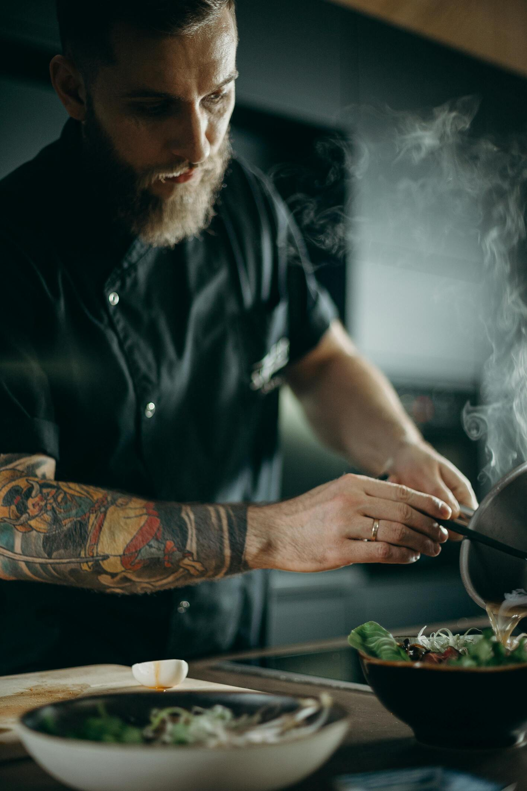

Aiko Tanaka
Sous Chef (Japanese Specialties)
Aiko brings the finesse of traditional Japanese techniques to the table,
specializing in crafting sashimi, tempura, and miso-based dishes with precision and authenticity.


Callum Fraser
Sous Chef (Scottish Fare)
Callum is the expert in all things hearty and rustic, focusing on showcasing
Scotland’s finest ingredients like Highland venison, lamb, and seafood in Luca’s fusion creations.

Fiona Wallace
Pastry Chef
Fiona ensures the meats are cooked to perfection, from seared Highland steak to
whisky-soy salmon. Her attention to detail guarantees every protein is the star of the plate.

Hiroshi Nakamura
Chef de Partie (Grill and Meats)
Hiroshi masters the sweet end of the menu, blending Japanese flavors like
matcha and yuzu with Scottish ingredients like berries, oats, and whisky to create show-stopping
desserts.

Angelina MacGregor
Head Waiter
Angelina is the friendly face of the dining room, expertly guiding guests through
the menu and recommending the perfect pairings for a seamless dining experience. His deep knowledge
of both Scottish whisky and Japanese sake makes him invaluable to the Fushion experience.

Mika Kobayashi
Table Attendant
With a warm smile and impeccable service, Mika ensures every guest feels at
home. From precise plating at the table to explaining the origin of dishes, her attentiveness
enhances every visit to Fushion.